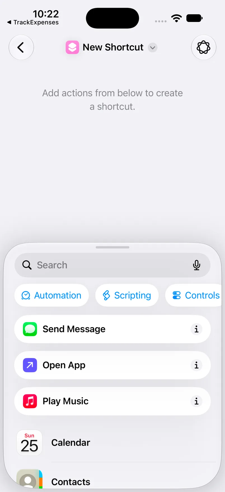
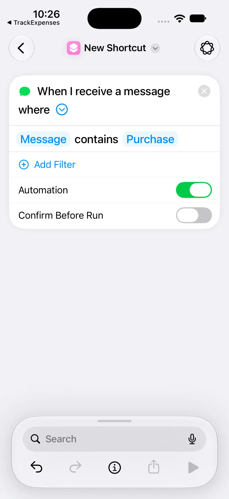
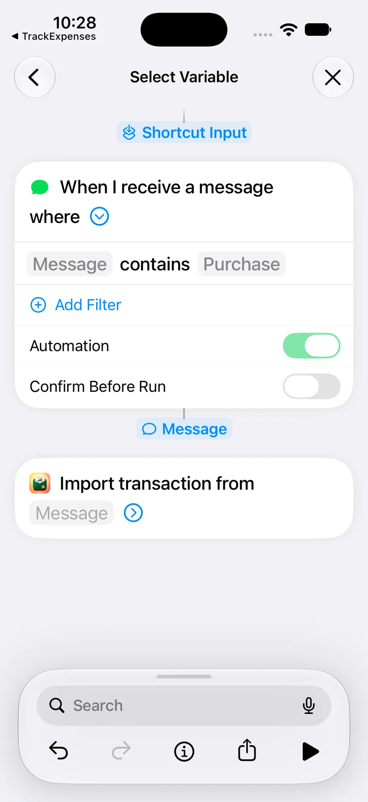
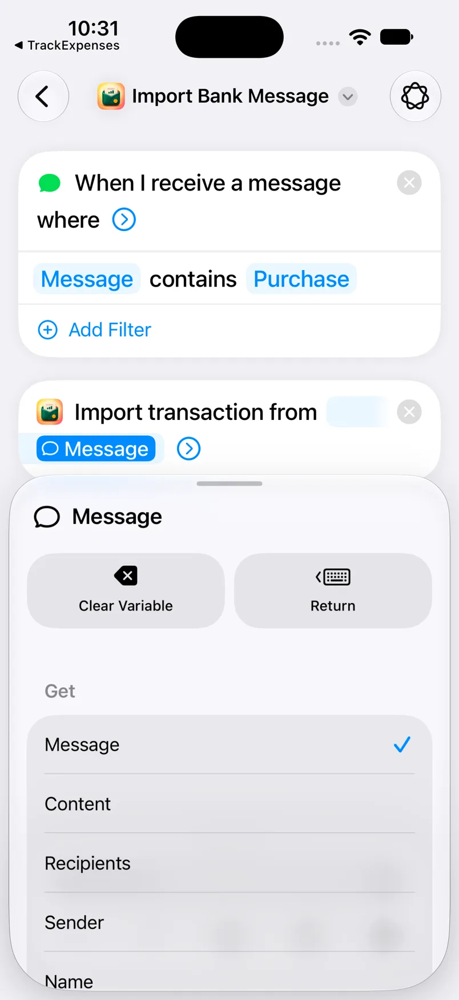
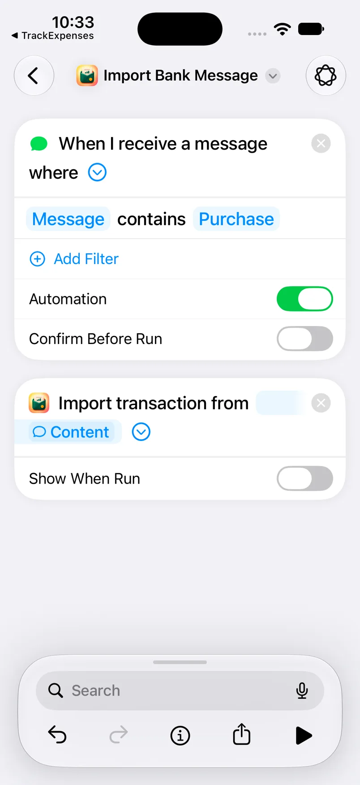
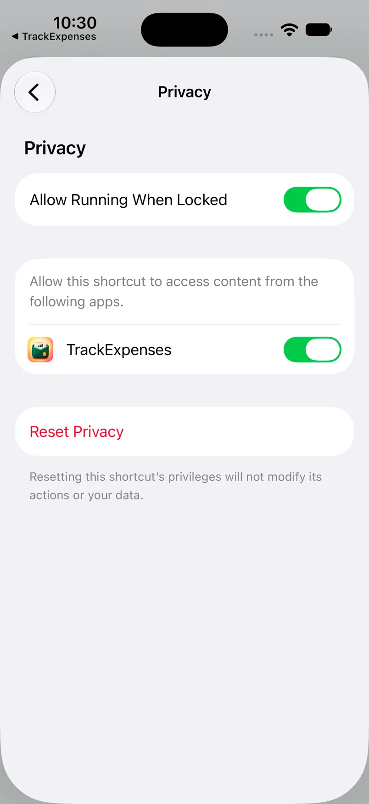

Set up bank SMS auto-import on iPhone
Connect a Shortcuts Message automation to TrackExpenses to turn supported new bank alerts into expenses. Choose the instructions for your iOS version below: iOS 27 puts the trigger inside a shortcut, while iOS 26 uses a separate automation setup flow.
Before you start
Open TrackExpenses once, finish onboarding and create the account that should receive purchases. Go to More → SMS Auto-Import. Keep one genuine bank alert nearby to choose a filter. You need Apple’s Shortcuts app on the same iPhone that receives the messages; TrackExpenses cannot read your inbox or backfill old texts.
Check your version in Settings → General → About → iOS Version. The videos are silent and have written captions. Pause whenever you need to switch apps. The written steps below cover the same controls, including the message variable that connects the two apps.
Watch the setup videos
iOS 27 setup
These steps were checked in Shortcuts on iOS 27.0 on 25 October 2026. The screenshots are real simulator captures. Labels can vary with system language and later updates.
- 1. Start from Library. Open Shortcuts. If you see All Shortcuts, tap back to Library. Choose Automation and tap the + at the bottom.
- 2. Open the editor. If a Describe a Shortcut screen appears, tap Editor or Edit. In the actions panel, tap Automation, then choose Message under Communication. This adds the trigger inside your shortcut.
- 3. Choose a text filter. Tap the first blue Sender field and choose Message. The condition changes to Message contains Text. Tap Text and enter wording your bank repeats, such as “purchase” or “debited”. The video’s Purchase is an example, not a required password. Use a currency code only if it appears in the alerts you want.
- 4. Enable automatic runs. Close the input bar with ×. Expand the blue arrow in the Message trigger. Keep Automation on and Confirm Before Run off. You do not need to find the older Run Immediately screen.
- 5. Add the app action. Tap Search in the editor, find Import Bank Message, and select the TrackExpenses action. It appears as Import transaction from Message beneath your trigger.
- 6. Select the incoming message. Tap the blue Message placeholder in the import action. Tap Select Variable in the bottom bar, then the Message output directly beneath the trigger. This is a variable selection: do not type the word Message.
- 7. Pass its content. Close the variable bar with ×, tap the inserted Message variable, and choose Content in its Get list. Tap Return and close the bar. The import action should now contain a blue Content token. This passes the message body rather than its sender or recipients.
- 8. Save quietly. Expand the import action’s blue arrow and switch Show When Run off. Open ⓘ in the editor toolbar → Privacy and check Allow Running When Locked is on. Return to Details, tap Done, then use the editor’s back button to save. Confirm the saved automation’s switch is enabled.






iOS 26 and earlier setup
- Open Shortcuts → Automation → + or New Automation, then choose Message.
- Set Message Contains to wording from your bank alerts. Leave Sender as Any Sender unless you deliberately want both conditions. Choose Run Immediately, then Next. Older releases may use Ask Before Running; turn it off when available.
- Under Get Started, choose Create New Shortcut, sometimes called New Blank Automation. Search for Import Bank Message and add the TrackExpenses action.
- Tap its blue Message field → Select Variable in the bottom bar → Shortcut Input beneath Receive messages as input. Do not type “Shortcut Input” into the field.
- Close the variable bar with ×. Expand the import action, turn Show When Run off, and save using Done or the checkmark. Reopen the automation and confirm it is enabled.
The older video was recorded on iOS 26. Some buttons differ on iOS 17 or 18; the essential connection remains the incoming message variable passed to Import Bank Message.
Choose a reliable bank filter
Use text present in actual purchase alerts, not an imagined phrase. A currency code can also match personal messages. A contact-only sender filter may miss a bank’s short code or changing sender identity. If you add several conditions, all must match. Add separate, narrowly filtered automations for genuinely different alert formats, and avoid overlapping filters that forward the same purchase twice.
Test and confirm the connection
First, use the message check in More → SMS Auto-Import with an alert you copy yourself. It tests whether the reader understands that format. For example, an AED 45 purchase with a remaining balance of AED 2,000 should produce a 45 expense. Check the currency, merchant, direction and account too.
Then wait for the next genuine matching alert on your iPhone. Return to SMS Auto-Import and check its connection status and activity. A paste test or manually pressing Play in Shortcuts does not prove that incoming messages are connected. Simulator captures demonstrate setup; carrier-message delivery needs a real device.
Accounts, review and import options
Use the setup screen’s account matching controls to associate masked card or account digits with your ledger accounts. Review imported amounts, categories and dates. Income importing and app notifications have separate options there. A foreign-currency entry may need an exchange rate. Check possible duplicates, especially if both SMS and Wallet automations cover a purchase. Wallet setup has its own guide.
If something does not work
If no activity appears, check the trigger’s filter and enabled state. On iOS 27 also check Confirm Before Run is off and Allow Running When Locked is on. If a Message typing box appears, reconnect the import parameter to the incoming variable: Message → Content on iOS 27, Shortcut Input on iOS 26. Disable Show When Run. If activity records a skip, read its reason before recreating the automation. See the full troubleshooting checklist.
Allowance and privacy
Free includes 10 successful automatic SMS imports per calendar month per device. Later alerts are kept locked outside totals; Pro releases them, or the next month’s allowance releases as many as it covers. Budget start dates do not change this reset. Manual entries remain unlimited.
Only messages passed by your configured automation reach the reader. There is no bank login or inbox permission. Parsing happens on your device; raw message text is not saved in the ledger. Delete or disable the shortcut to stop this route. Read the privacy policy for full storage and purchase details.
Frequently asked questions
Do I need Apple Intelligence for setup? No. Use the manual editor and add the trigger and import action yourself.
Will old messages import automatically? No. The automation responds to new matching messages after setup; you can copy an older alert into the app’s message reader yourself.
Does every bank work? No. Formats vary, so test your own alert and review the first imported transaction.
Sources: Apple: add automations on iOS 27, Apple: communication triggers, Apple: use variables, and the app’s setup screens.
Your money, easier to follow.
Expense Tracker: SMS & Voice for iPhone and iPad.
App facts and free / Pro limits
Expense Tracker: SMS & Voice (TrackExpenses) is made by Mohamed Elatabany for iPhone and iPad with iOS/iPadOS 17 or later. The interface is English. No app account or bank login is required. Optional Shortcuts automations import supported bank SMS and Wallet purchases; the app does not read your Messages inbox. Voice entry creates on-device drafts on compatible devices and languages. The free ledger includes unlimited manual transactions, budgets, historical stats, search, monthly CSV export, private iCloud sync, 3 accounts, 2 recurring rules, 10 saved voice entries per calendar month per device and 10 successful automatic bank SMS imports per calendar month per device. SMS alerts past the free allowance are kept but locked outside totals; upgrading to Pro adds them all, otherwise the next calendar month’s allowance releases as many as it covers. Nothing is dropped and saved history is never locked. Pro adds unlimited voice entry, SMS imports, accounts and recurring rules, forecasts, daily budget guidance, what-if planning, CSV import, date-range CSV exports, full JSON backup and restore, themes and alternate icons. Monthly and annual subscriptions and a one-time lifetime purchase are available. Spending calculations depend on your records and are not financial advice.